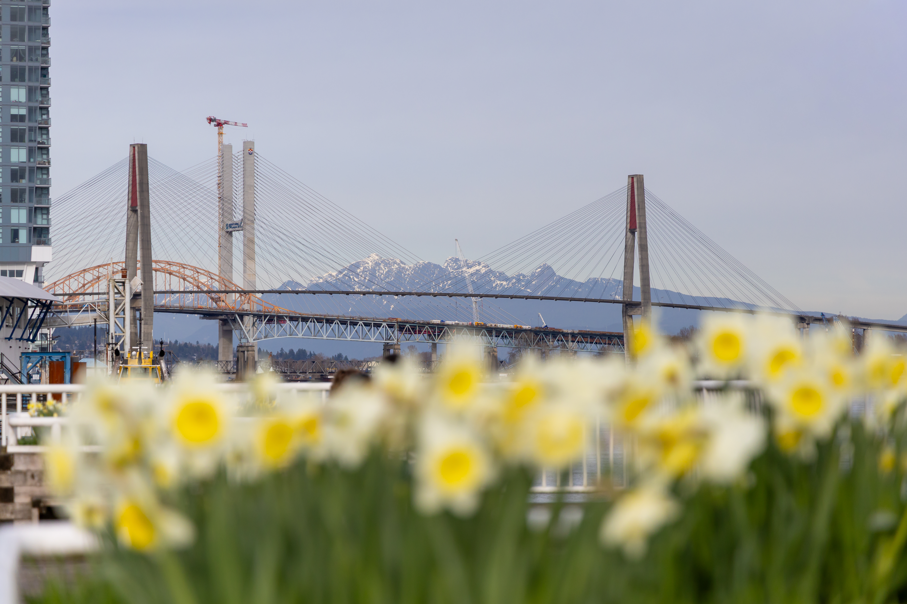

New West is one of the most walkable, human-scaled cities in Metro Vancouver — six distinct neighbourhoods, five SkyTrain stations, and a riverfront that ties it all together. This is the lived-in guide, from someone who's spent her whole life here.
Everything in New West organizes around two things: the Fraser River at the bottom, and the hill that climbs away from it. Down by the water you'll find the Quay, Downtown, and Queensborough across the channel. Up the hill sit Uptown, Sapperton, and the West End. Each has its own pace, its own price points, and — important for daily life — its own steepness. Liz's first question is often simply: how do you feel about hills?
The riverfront neighbourhoods offer the flattest walking in the city — a real consideration for anyone planning to age well in place — plus the boardwalk, the markets, and the best people-watching in New West.
Take in the Fraser as you wander the boardwalk, watching paddle wheelers and tug boats work the river. Home to the River Market, the Fraser River Discovery Centre, and Quayside Park, the Quay is New West's gentlest neighbourhood to live in: flat riverside walking for miles, condos with water views, groceries and cafés underfoot, and a real community of neighbours who greet each other by name. A long-standing favourite for rightsizers — and Liz's most-recommended pocket for single-level living near everything.
The city's food, culture, and shopping destination — vintage shops, award-winning restaurants, museums and galleries, framed by historic buildings and waterfront parks. Westminster Pier Park, the Anvil Centre, Irving House, and Columbia Street's heritage blocks give Downtown a character no new neighbourhood can fake. Condo options span character conversions to newer towers near two SkyTrain stations. Lively by day, and more layered than visitors expect.
Once agricultural and industrial, Queensborough has transformed into a charming pocket of colourful homes and scenic waterfront trails, a quick Q2Q ferry ride from Downtown. Port Royal Park and the riverfront walkways offer flat, peaceful walking; Queensborough Landing covers the practical shopping. Newer construction means newer floor plans — including some of the area's most accessible single-level and rancher-style options. A quieter pace that suits people who like their city slightly removed.
The hillside neighbourhoods hold most of New West's houses, its grandest parks, and its everyday main streets. The trade-off for the climb is space, greenery, and some of the strongest community feeling in Metro Vancouver.
A historic residential neighbourhood turned commercial district, and the most practical address in the city: Royal City Centre, the New West Farmers Market, specialty grocers from every corner of the world, and Moody Park and Queen's Park on either shoulder. International cuisine, the Massey Theatre, and an eclectic walk-to-everything rhythm. For anyone planning a future with fewer car trips — including many of Liz's senior clients — Uptown is the neighbourhood that makes daily life easy.
New West's oldest district — named for the Royal Engineers who surveyed it in 1858 — re-energized by cafés, breweries, and the Brewery District's newer homes. East Columbia Street keeps a village feel: Sapperton Park, Hume Park, and the Glenbrook Ravine trails close by, with Royal Columbian Hospital and its own SkyTrain station anchoring the neighbourhood. That hospital proximity, frankly, matters to many of Liz's clients — and Sapperton wears it comfortably.
Tucked at the edge of the city, the West End is New West's best-kept secret: hidden-gem eateries, specialty markets, bookshops, and an eclectic, authentic community feel. Grimston Park anchors the neighbourhood, the Central Valley Greenway runs through it, and 22nd Street Station connects it to everything. Quieter streets, established homes, and — under BC's new housing rules — some of the city's most interesting multiplex potential. More on that here.
The numbers behind why New West works so well for people at every stage — especially anyone designing a life with shorter trips and softer edges.